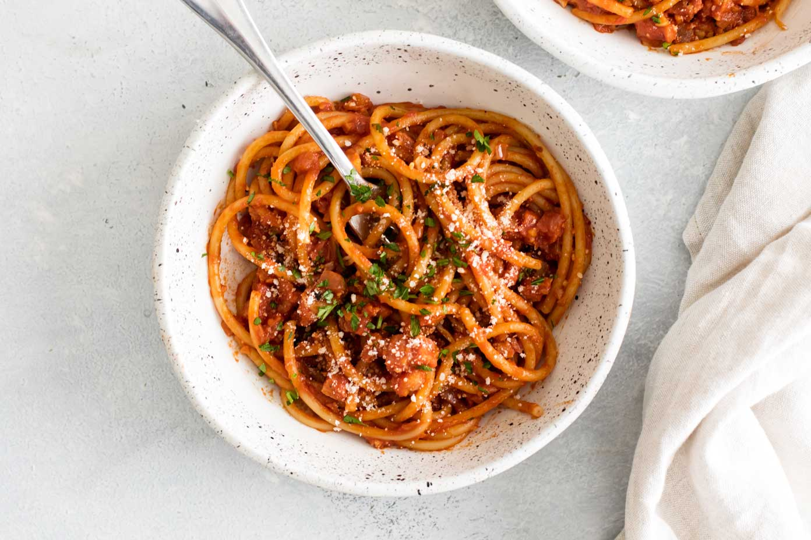

Bucatini all'Amatriciana

Description
This is the single best pasta preparation.
Ingredients
- 2 Tbsp. extra-virgin olive oil
- 4 oz. thinly sliced guanciale, pancetta, or chopped unsmoked bacon
- ½ tsp. crushed red pepper flakes
- ½ tsp. freshly ground black pepper
- ¾ cup minced onion
- 2 cloves garlic, minced
- 1 28-oz. can peeled tomatoes with juices, crushed by hand
- Kosher salt
- 12 oz. dried bucatini or spaghetti
- ¼ cup finely grated Pecorino (about 1 oz.)
Directions
-
Heat oil in a large skillet over medium heat. Add guanciale and sauté about four minutes.
Add pepper flakes and black pepper; stir for 10 seconds. Add onion and garlic and cook
until they soften, about 8 minutes. Add tomatoes and reduce heat to low. Cook, stirring
occasionally, until the sauce thickens, 15-20 minutes.
- Bring a large pot of water to boil. Season with salt. Add pasta and cook, until 2 minutes
before al dente. Drain, keeping 1 cup of pasta water.
- Add drained pasta to skillet and toss to coat. Add the saved pasta water and cook until
the past is al dente, about 2 minutes. Stir in cheese. Serve.